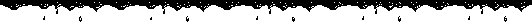
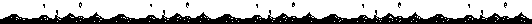

Welcome to Digitoire
Thank you for checking this site out! It's currently under development, but do feel free to look around and see what (lack thereof) I decided to put on here.
If you like what you see, follow my socials here. Purrsylum is my main channel and Purrsylum Archive is my VOD channel.
Join the Bact Asylum for more frequent updates!
Since you're here, why not also leave a message in the Markyard?
